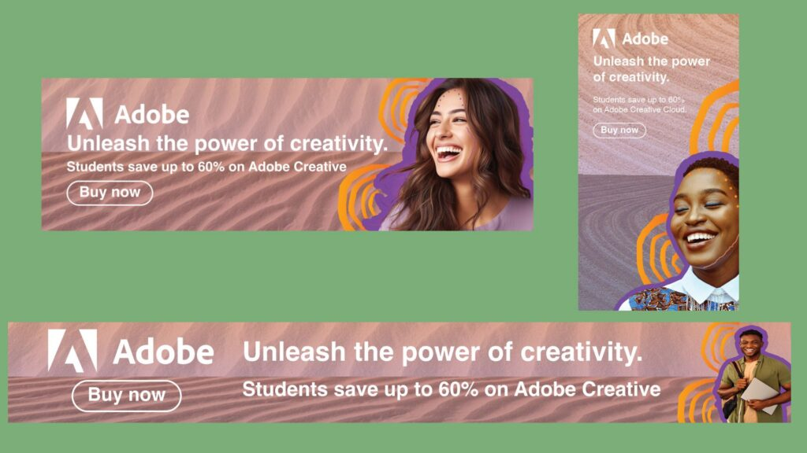
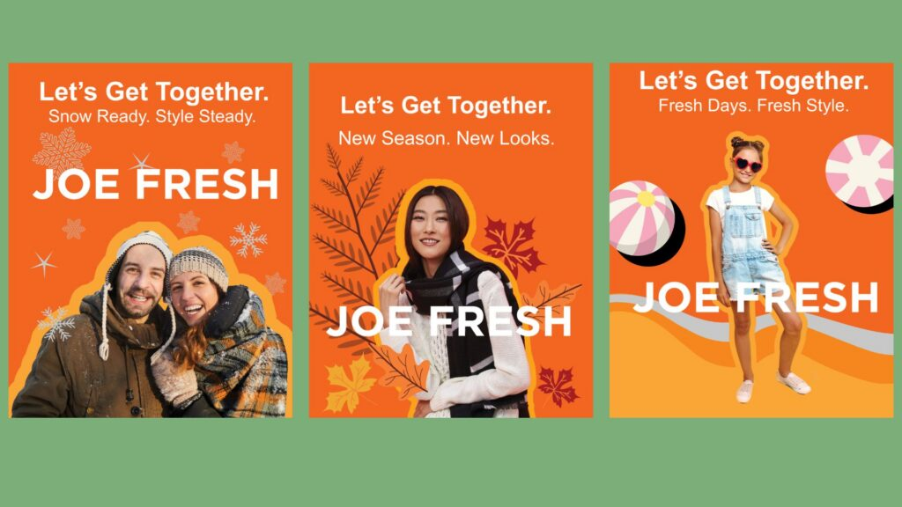
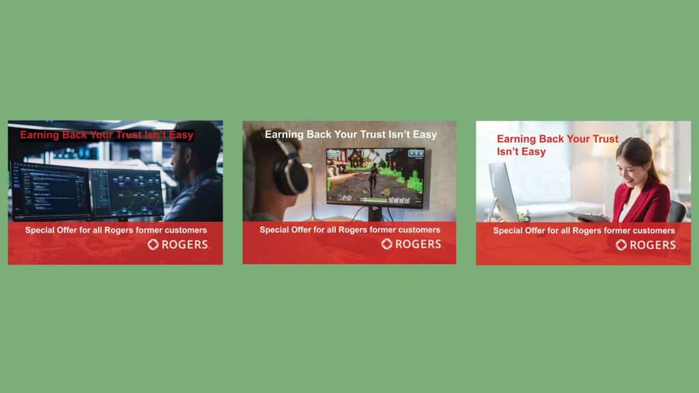
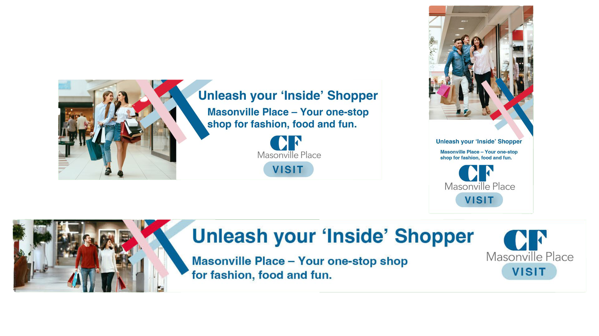
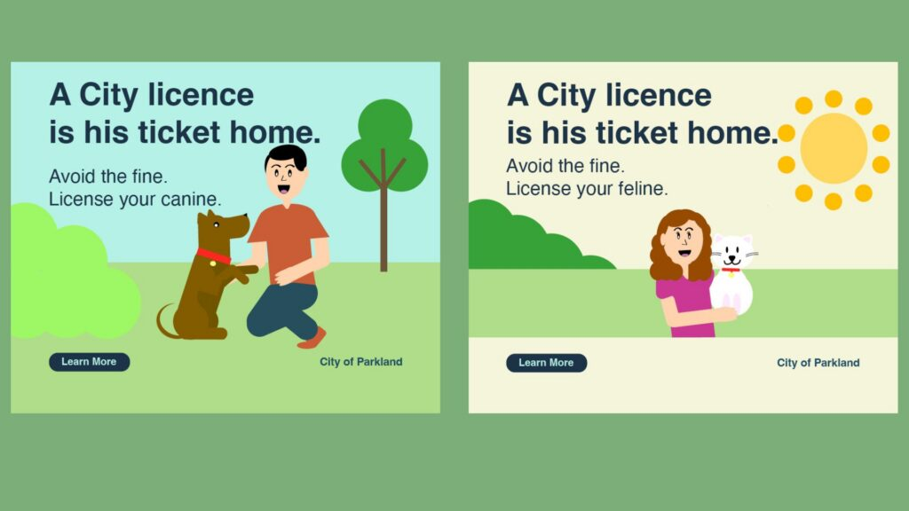
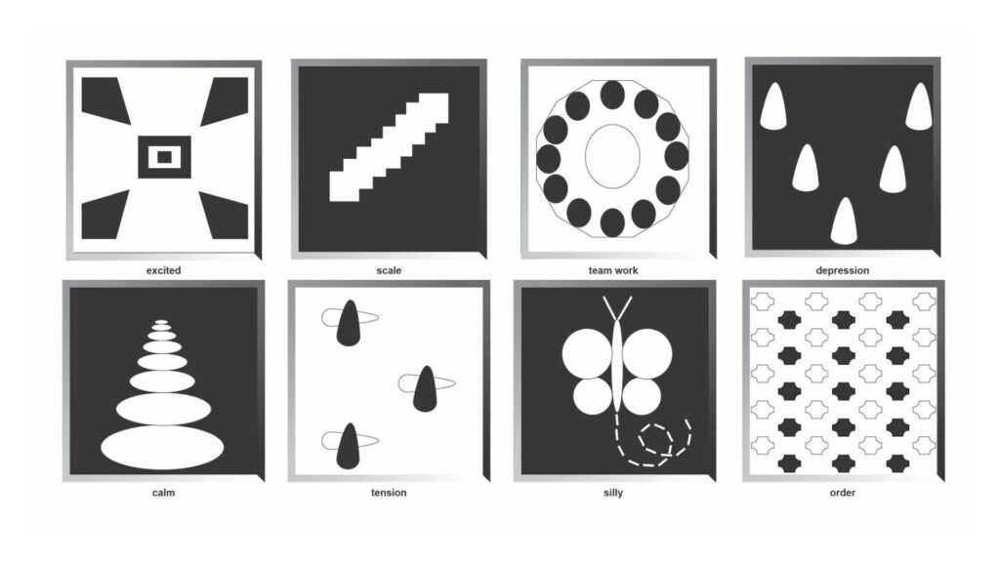

Social Media Calendar – FIFA
Increase brand awareness
The project background was promoting the FIFA World Cup 2026 in Toronto. I used Canva to design
the social media calendar of the posts during June and July 2026, before, during and after the
event.
I considered holidays and potential days to create a strategy for posting directed to their
target audience focusing on increasing their ROI and the awareness of the celebration of the
cultural
diversity of Toronto and relating it to the World Cup.
Social Media Policy – London Lightning
Protection of the company
The project background was creating the social media policy of the basketball team London
Lightning. Using Canva, I created a presentation to be shared with the employees with the main
policies of the company to protect their reputation, manage risks and prevent future crisis.
Project Management Plan – Joe Fresh
This project plan was created for Joe Fresh to create two posts for a campaign. I used Excel
and Word to create the plan with a Gantt Chart ensuring the organisation of the project with
specific days and assigning the tasks to each team member responsible.
Project Closure Report – Joe Fresh
This project plan was created for Joe Fresh to create two posts for a campaign. I used Word
to create the plan with a final assessment of how the project was developed and what it could be
improved.
A/B Testing – Kamik Footwear
This project was made for Kamik Footwear to do an A/B Testing of the boot. Using Word, I
explained how it
was going to be applied the variation A and variation B of the test. The results showed that it
improved
the conversions of this product.
Design Projects
Adobe Campaign

Creativity for Students
This campaign was developed for Adobe, focusing on inspiring creativity among students as they
design digital
campaigns and visual content.
The goal was to encourage students to explore Adobe tools while creating graphic pieces tailored
for digital
environments, highlighting originality, experimentation, and self-expression in the creative
process.
The project background was creating different banners by using Illustrator, Photoshop and
InDesign with all
documents organized in layers to facilitate any future changes.
Joe Fresh Campaign

Minimalist Approach
Tasked with evolving Joe Fresh's typical advertising style, which traditionally features
minimalist imagery with a plain background, I explored
how to enhance visual storytelling on Instagram through playful design elements like shape,
colour, and line, all while maintaining brand coherence.
The project background was creating different designs for the new season that was starting by
using Illustrator, Photoshop and InDesign with all
documents organized in layers to facilitate any future changes.
The outcome was providing different assets to be used in the future, which aligns with a social
media strategy to have materials prepared beforehand.
Rogers Campaign

Crisis Communication
This project demonstrates my ability to design targeted visual communications that align with
specific brand objectives during crisis recovery.
By applying crisis communication knowledge, for the Rogers email banner campaign, I created
multiple ad concepts, each tailored to a different
target audience—such as long-time customers, business users, and tech-savvy individuals—to
effectively rebuild trust, show gratitude, and encourage
continued engagement with the brand.
The project background was creating different designs for each target audience by using
Illustrator, Photoshop and InDesign with all documents
organized in layers to facilitate any future changes.
Masonville Campaign

Digital Banner
For the Masonville Place project, I designed a digital banner ad aimed at encouraging online
shoppers to visit the mall in person.
The concept focused on creating a vibrant, engaging visual that captures the excitement of
in-store experiences—highlighting exclusive
offers, seasonal events, and the sensory appeal of shopping locally—to effectively drive foot
traffic from digital platforms to the physical mall.
The project background was creating different designs for each format by using Illustrator,
Photoshop and InDesign with all documents
organized in layers to facilitate any future changes.
Naïf Art – A Creative Touchpoint

Simplicity
Naïf art, also known as “naive art,” is a style characterized by its simplicity, vibrant colors,
and childlike perspective. It embraces
a sense of honesty and emotional clarity, often ignoring traditional artistic rules like
proportion and perspective. I incorporate naïf
art elements into the city branding to evoke trust, joy, and a deeper human connection with
audiences.
The project background was creating accessible, simple and comprehensive imagery by using
Illustrator and InDesign with all documents
organized in layers to facilitate any future changes.
Emotional Expression Through Simple Forms

Geometric shapes
These compositions showcase my ability to convey emotions using simple shapes to represent
different subjects.
Created in Adobe Illustrator, each piece reflects careful attention to visual harmony. Throughout
the process, I applied key design principles such as contrast, repetition, alignment, and
proximity (CRAP), learning how to effectively organize, align, and balance elements to create
visually engaging artwork.